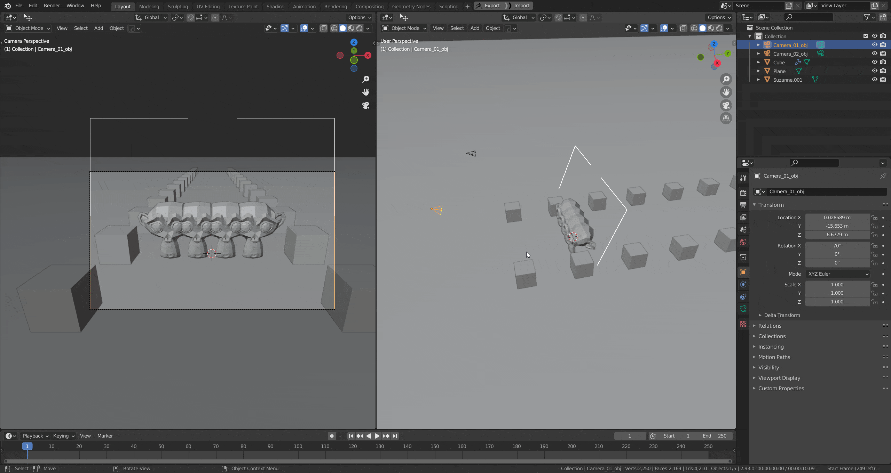

Release Notes
Simple Camera Manager 1.0
Rebranding to Simple Camera Manager
Feuatures
- Converted to Extension (Blender 4.2+) - Now integrates as an extension for Blender 4.2 and beyond
- UI Improvements – Improved layout for better usability
Fixes
- Camera Scene Panel - no longer forced on top
- Unregister Warning - Removed unnecessary warnings
- Preferences Operator - Fixed the 'Open Preferences' operator for consistent access to settings
1.2
Support for Blender 4.0 and keymap improvements
Feuatures
- Blender 4.0 Support
- UI Improvements
- New Keymap UI
fixes
- Custom Hotkeys
1.1.1 Hotfix
Feuatures
- Blender 3.1 Support
- #81 Gizmos can be hidden when not used
Fixes
- #80 Gizmo can't be selected by the user in 3.1
1.1.0
Feuatures
- Dolly-Zoom operator with Viewport Gizmo
- Blender 3.0 Support
- Use camera name for saving renders

The Dolly Zoom is the big feature of this release. It is not only a powerful tool in itself, it's also the first tool using a viewport Gizmo, paving the way for future, user-friendly and powerful tools in the addon.
Fixes
- #57 The exposure of 0.00 is ignored when switching between cameras.
1.0.0
First official release